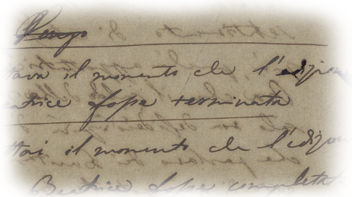
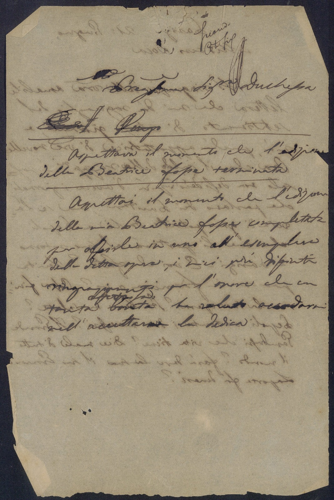

| Lettera | |
|---|---|
|  |
Parigi, Giugno 1835 Vincenzo Bellini a Eleonora Statella, Duchessa di Sammartino. Minuta di lettera. Museo civico belliniano. Un foglio, una facciata, verso. Edizioni: NERI2005 p. 422 OLSCHKI2017 p. 527 n. 458/1 Ubicazione maggio 2018: Casa natale, Sala B, vetrina 6, ripiano 2, III formato(numero di carte e misure): c.1rv - Lettera, originale, con firma autografa, busta. 203 x 134 Stato fisico: La lettera presenta strappi sui margini della pagina, pieghe e buchi, alcune parole sono incomprensibili e vi è la presenza di macchie d'inchiostro,sbavature e freghi. In trasparenza si nota il testo presente sull'altra faccia del foglio. Sono presenti nellla pagina, delle linee che delimitano una porzione del testo. Lingua: Italiano Pregiatissima Sig.ra Duchessa (Eleonora Statella, Duchessa di Sammartino) Aspettava il momento che l'edizione della Beatrice (di Tenda) fosse terminata. Aspettai il momento che l'edizione della mia Beatrice (di Tenda) fosse completata per offrirle in uno all’esemplare della detta opera, i miei più distinti ringraziamenti per l’onore che con tanta \affettuosa/ bontà ha voluto accordarmi nell'accettare la dedica |
|  |